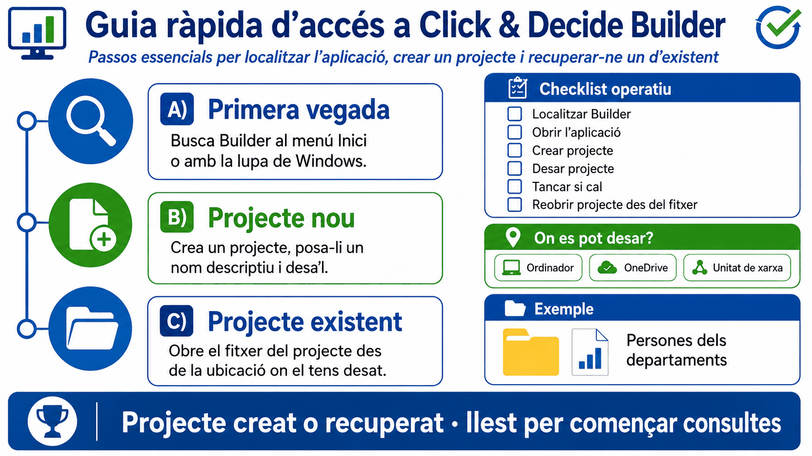
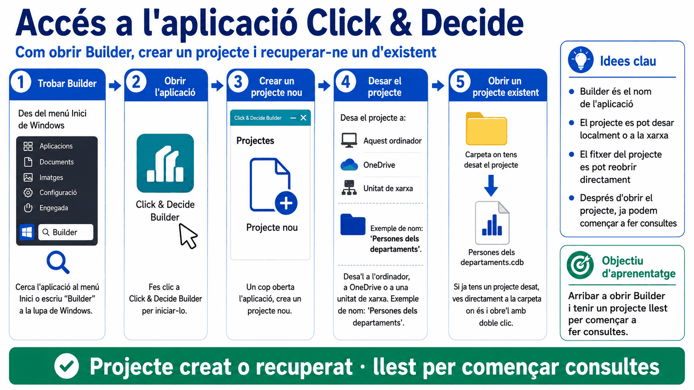
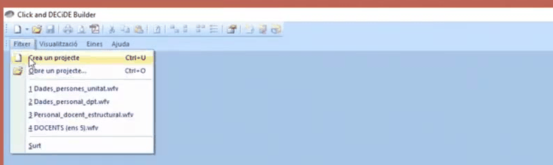

Apartat 1El programa i el projecte
Convé separar des del primer moment dues coses que sovint es confonen:
Builder és el programa
És l'aplicació d'escriptori que s'instal·la a l'ordinador. El seu nom complet és Click & Decide Builder, però tant la documentació com els vídeos oficials l'abreugen sovint a Builder. És el que buscareu al menú d'inici.
El projecte és el document
És el fitxer que creeu vosaltres i on queda desada la feina: les consultes, els informes i els cubs. Fa el mateix paper que un document per al Word o un llibre per a l'Excel. La documentació de l'EAPC el compara, amb encert, amb una base de dades d'Access.
Un projecte de Click & Decide és, doncs, un contenidor. Per si sol no conté dades: conté les definicions de les consultes que heu construït. Cada vegada que n'executeu una, el programa torna a anar a buscar la informació actualitzada a la base de dades.
Els projectes es desen amb l'extensió .wfv. Els podeu guardar
a la carpeta i el directori que vulgueu, exactament igual que qualsevol
altre document ofimàtic.
Apartat 2Esquema general

Apartat 3Localitzar Builder
Si és el primer cop que hi accediu, cal trobar l'aplicació a l'ordinador. Hi ha tres camins i tots tres porten al mateix lloc; escolliu el que us resulti més còmode.
-
Accés directe a l'escriptori
Si l'ordinador ja té l'accés directe creat, hi haurà una icona de Click & Decide Builder a l'escriptori. En fer-hi doble clic el programa s'obre amb el darrer projecte que hàgiu utilitzat, cosa que estalvia haver-lo de buscar cada dia.
-
Menú Inici de Windows
Obriu el menú Inici i busqueu Builder entre les aplicacions instal·lades.
Windows → Inici → Builder -
Cerca de la barra de tasques
És el camí més ràpid. Feu clic a la lupa de la barra d'eines de Windows, escriviu
Builderi seleccioneu l'aplicació que aparegui sota Millor coincidència.
Si l'aplicació no apareix per cap d'aquests camins, no és un problema de cerca: probablement encara no teniu l'alta d'usuari feta o el programa no està instal·lat en aquest equip. Tots dos tràmits els gestiona el vostre departament.
Apartat 4Crear un projecte nou
Amb Builder obert, el primer que farem és crear el contenidor de treball. Hi ha dues maneres equivalents de fer-ho:
...o bé prémer directament la icona de full en blanc de la barra d'eines. En tots dos casos el programa obre immediatament una finestra per desar el fitxer: a Click & Decide, crear un projecte i desar-lo són el mateix gest.

En obrir el programa sovint es carrega un projecte genèric ja existent. És una plantilla comuna: la bona pràctica és crear-ne un de propi i deixar el genèric tal com està.

.wfv. Fixeu-vos que sense cap projecte obert la barra només té quatre menús: amb una consulta oberta en tindrà vuit.
Videotutorial 1 de l'EAPC, minut 0:41.
Mentre us moveu pels menús, mireu la barra d'estat del final de la finestra: hi va descrivint què fa l'opció que teniu marcada ("Crea un projecte nou"). És la manera més ràpida de saber què fa un botó del qual no us refieu.
Apartat 5Desar-lo i anomenar-lo
A la finestra de desament heu de decidir dues coses, i totes dues us afectaran durant mesos. Quan obriu una consulta, aquesta mateixa barra passa a tenir vuit menús: s'hi afegeixen Edició, Consulta, Format i Finestra. Si busqueu una opció i no hi és, mireu primer si teniu res obert.
El nom
El programa proposa noms com projecte 1 o
projecte 2. Substituïu-los sempre per un nom que digui
què conté. En els materials oficials l'exemple és
Persones dels departaments, i és un bon model: descriu el tema, no
la data ni l'autor.
La ubicació
Les tres ubicacions habituals són:
- el disc dur de l'ordinador;
- OneDrive, si voleu que se'n faci còpia automàticament;
- una unitat de xarxa, si la consulta l'ha de poder recuperar més gent de la unitat.
Un cop desat, el projecte ja està creat. Podeu tancar el programa si en aquell moment no hi continuareu treballant: la feina no es perd, perquè el fitxer ja existeix al disc.
Fixeu-vos que, en desar, el nom que heu triat apareix a la barra de títol de la finestra i a la pestanya del projecte. És la manera més ràpida de comprovar sobre quin projecte esteu treballant.
El projecte no s'ha de desar per força al disc de l'ordinador. El vídeo oficial recorda que es pot desar igualment al OneDrive (one drive) o a una unitat de xarxa, i val la pena fer-ho: una consulta ben feta costa una estona, i al disc local es perd amb l'ordinador.
A la finestra de desar, el tipus de fitxer ja ve triat: Projectes Click and DECiDE (*.wfv). No l'heu de tocar, però val la pena haver-lo vist un cop: és el que us dirà, quan busqueu un projecte al disc, quins fitxers són projectes i quins no.
Apartat 6Recuperar un projecte
Quan el projecte ja existeix hi ha dos camins, i el més còmode és el que molta gent no fa servir.
Des del fitxer, sense obrir el programa
No cal obrir Builder prèviament. Aneu a la ubicació on vau desar el projecte -l'escriptori, una carpeta, la unitat de xarxa- i feu-hi doble clic. El fitxer obre el programa i el projecte alhora.
.wfv →
Builder s'obre amb el projecte carregat
Des del programa ja obert
També hi ha la icona corresponent a la barra d'eines. Funciona igual que obrir un document de Word o una base de dades d'Access.
Hi ha un camí encara més curt que passar pel programa: si teniu el
fitxer .wfv localitzat a l'explorador de fitxers
de Windows, un doble clic a sobre obre el Builder amb aquell
projecte ja carregat. La barra de títol passa a dir
Click and DECiDE Builder seguit del nom del projecte, que és
la manera ràpida de saber amb quin esteu treballant.
Apartat 7Com organitzar els projectes
No hi ha límit: podeu tenir tants projectes com vulgueu. La recomanació de la documentació oficial és clara i val la pena seguir-la des del primer dia.
Un projecte per a cada tema diferenciat de consultes o informes. Un projecte de plantilla i llocs, un altre d'incidències, un altre de titulacions. Barrejar-ho tot en un únic fitxer fa que al cap de sis mesos no trobeu la consulta que busqueu.
Dins de cada projecte hi definireu totes les consultes, informes i cubs, que quedaran associats a aquell fitxer. I si més endavant us equivoqueu de projecte, no cal refer res: una consulta es pot copiar o retallar i enganxar en un altre projecte, com veurem a la unitat 3.
Apartat 8Llista de comprovació
Considereu la unitat superada quan pugueu fer tot això sense ajuda:
- Localitzar Click & Decide Builder a Windows pels tres camins.
- Explicar la diferència entre el programa i el projecte.
- Crear un projecte nou des del menú i des de la barra d'eines.
- Assignar-li un nom descriptiu i triar-ne conscientment la ubicació.
- Reconèixer un fitxer
.wfval sistema de fitxers. - Obrir un projecte existent des del fitxer, sense passar pel programa.
- Justificar per què convé tenir un projecte per tema.
Builder no és l'única porta d'entrada. Hi ha també una aplicació web que és on trobareu els manuals de cada taula i els llistats predefinits, i on es fa visible què us deixa veure el vostre perfil d'usuari.